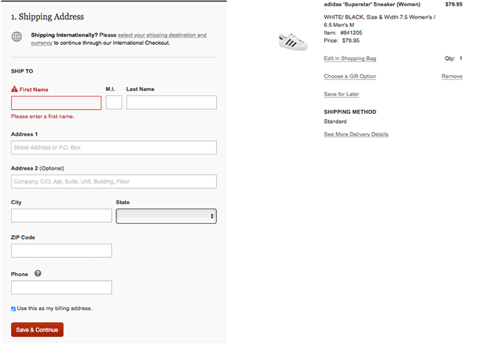
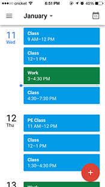
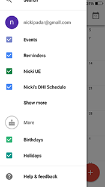
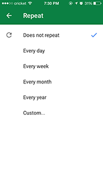
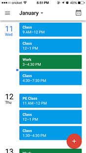
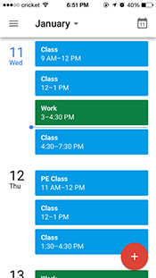

For my studio 5, I started out with researching the best Javascript libraries to use for
making interactive maps. I decided to use the Mapbox
library. At first, I was really confused and overwhelmed on how to use this library but
as I looked into it more, it started to make more sense.
I started out with creating my own dataset of endangered species which included their name,
conservation status, picture, and description. I plan on adding more information to each animal
including a section on how to help and videos. I then added coordinates to each species to specify
where on the planet they are found. Once I figure out how to, I plan on actually changing the point
to areas where the species is found. This would give a more accurate representation of the regions
the species are found.
I wanted to make the map interactive which was confusing to figure out because there were so
many different ways of doing it, it was hard to pick out the best one. I ended up using the Mapbox
popup feature which is able to set the html of the features you want to show up when the user
clicks on a dot. I then realized that using the "single point" option would not work with the
plans I had in mind. Instead, I should use a "symbol" so I am able to customize each dot based
on the different status of each species.
This library is a good way to make interactive maps although it takes time to figure out how
everything works. I do think it was an easier alternative to other libraries such as d3
which are far more complicated since it has many more features. I would recommend Mapbox
to someone who is looking to make interactive maps. A lot of the "styling" of the map
is done through the Mapbox studio editor which makes is easier on the developer since
the code is automatically written for them. All they have to do is link their customized
map in the Javascript and code a few lines for the map to become interactive.
February 13, 2017
Blog 4: Studio 4 Evaluation
My studio 4 is based off the process of developing pictures in the darkroom. There
are four different trays of solutions you need to put your image in to develop. The first
is the developer, then stop, then fixer, and finally a water rinse.
Underneath the title of the page, I put a line that tells the user how to start interacting
with the page. When the user hovers over the film, a tool tip will appear and guide the user
into what the next step is. The tool tips are connected to the individual timers because
I figured that as the user is waiting for the time to stop, they could already know what
the next step they should do is. After clicking on the image of the timer, a countdown will
appear underneath each tray so the user knows how much more time is left for that step in
the development. This mimicks the real process of developing a picture in the darkroom.
After time is up, an image will appear, and each step the image will get stronger in opacity.
This also mimicks what it looks like when developing in real life. The final step is clicking
on the fully developed picture to see an englarged version on the side. This is just so the user
has a better sense of what the picture looks like and the cool "process" they just went through.
One aspect of my design that I thought was interesting was how I added in a subtle hover
effect on the timers. When the user is hovering over it, the timer will vibrate slightly
to show that the timer has some interactive element to it. I also liked how at each
step the image gradually shows up. This really represents how it looks like when you actually
do it. Another thing I liked was that the user is able to click on the final image to see what
it actually looks like. I did this because the image is a bit small while in the development
process, and I wanted the user to be able to fully experience how it felt like to be in a darkroom.
February 5, 2017
Blog 3: Studio 3 Evaluation
I made my studio 3 based off of the numerous keychains I have collected throughout
my travels. These are just a few to showcase the diverse places I have visited! Traveling
is one of my favorite things to do and these keychains helps me remember all the
fun times I've had.
When the user hovers over a keychain, the image will increase in size a little bit
to give the user a hint that something will happen when the image is clicked on.
When a keychain is clicked on, a text bubble will appear to the side of it explaining
a story about the keychain and where I got it. I also put in a fade-in effect so when
the page loads, the images slowy go from opacity:0 to opacity:1. I feel that this effect
is nice to have so not all the content pops out at the user at once. The hair also
sways back and forth when the mouse is hovered over it. I did this since the hair has
such a large surface area on the page so that the user will realize that the items
can move. This can then lead them to further exploration of the page.
January 29, 2017
Blog 2: Form Evaluation
A form that I use often is Nordstrom's checkout form. It includes input boxes
for your Name, Address, City, ZIP code, and Phone. There is a drop down menu to
select the state, and a radio button to select whether or not you want this same
address to be used as the billing address.
Priority: If you forget to input into a field a red notification with an exclamation point will
appear above the field. This uses
Bill DeTouchey's principle on how green means good
and red means bad. The form also uses zoning to separate out content. Below the billing
address is a section for shipping method, followed by payment, and ending with
a review of the order. Each of these zones are unaccessbile until the previous zone is
completely filled out. Each zone also gets a light gray background when selected to make it easier
on the user to separate the content from the background.
Clarity: The interface of the form communicates clearly. Every input box has a clear
label including helpful hints on what should go in the box in case there is the slightest of
confusion. For example for the Address 2 box, there are keywords such as Company, C/O, Apt, Suite,
etc. to help the user just in case they get confused on why there are two address boxes. There
are also little icons with "?"'s in which the user can click on receive more details on what or why
they need to input into the form.
Purpose: The web form has a clear purpose which is to get all the necessary information from the
user in order to send them the item they bought.
https://secure.nordstrom.com/os

January 17, 2017
Blog 1: User Interface Evaluation
An user interface that I often use is the Google Calendar mobile application.
I find this application extremely useful in keeping my class, work and
extracurricular activities schedules. The interface is easy to learn and use.
When first opening the calendar, I am directed straight to my schedule so I can
see what activities I have going on during the day. I can pick the color of the
activity when I input them into the calendar which makes it easy for me to
organize the types of events, ie. green for work, light blue for class, dark blue
for meetings, etc. I can also click on the month to get a drop schedule of the month.

By clicking on the menu bar at the top left corner, I can easily choose which format
I would like to view my schedule in. I can then click the big, red button on the bottom
left corner to add something to my schedule. Three options appear and I can choose whichever
I would like to add. The menu and add icon is an effective user interface design because it
is straightforward and a new user can easily navigate through it.
The schedule input menu is also well-designed because it has every option a user would need
to keep track of their schedule. Name of the event can be inputted right away at the top of the
screen, along with choosing which calendar the event belongs to. You can set a recurring event
easily by using the "Custom Repeat" option. I find this element extremely useful because most
activities that I have going on are on a quarterly basis. To be able to set my schedule and repeat
certain items until a specific date is very useful and efficient. You can also easily turn any
calendar on or off by unchecking the boxes next to it.


On top of keeping track of everything for me, this application is well-designed. The colors I can choose from are visually appealing and everything is clearly marked. Google calendar also has the option of sharing your calendar with others so that you may view their schedule as well. This is convenient when trying to schedule meet-ups with friends or family. This application has helps me keep track of where I need to be, thus improving my lifestyle tremendously.


 
